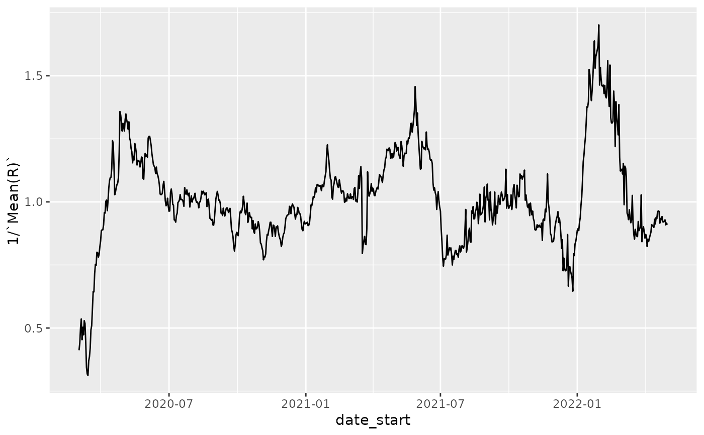
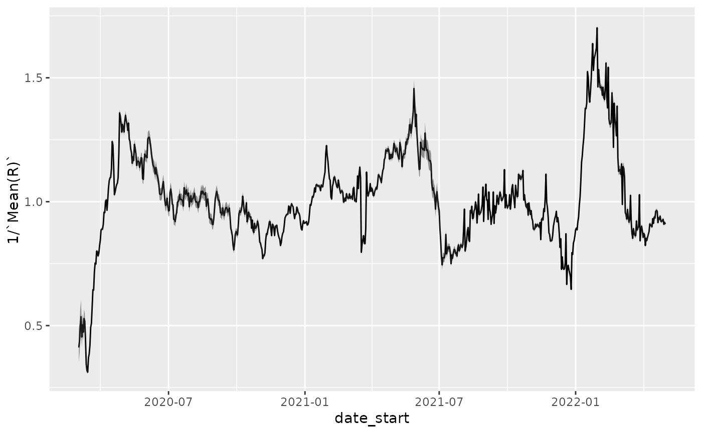
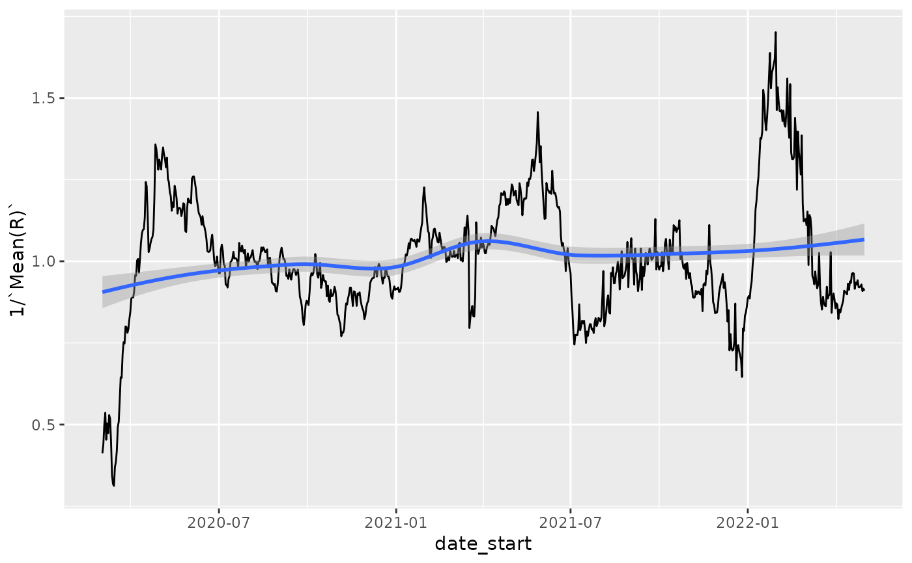
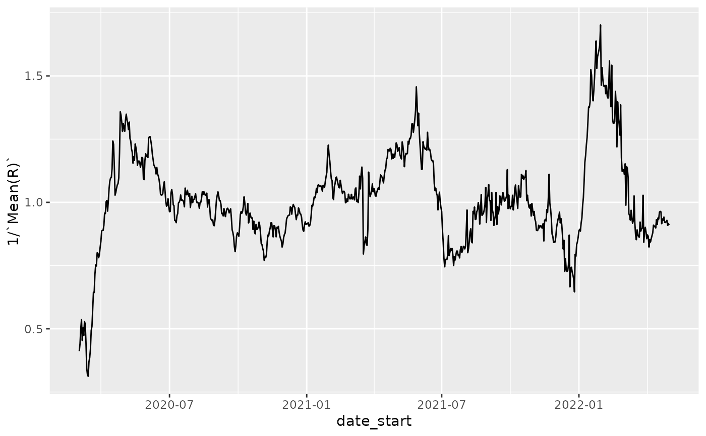
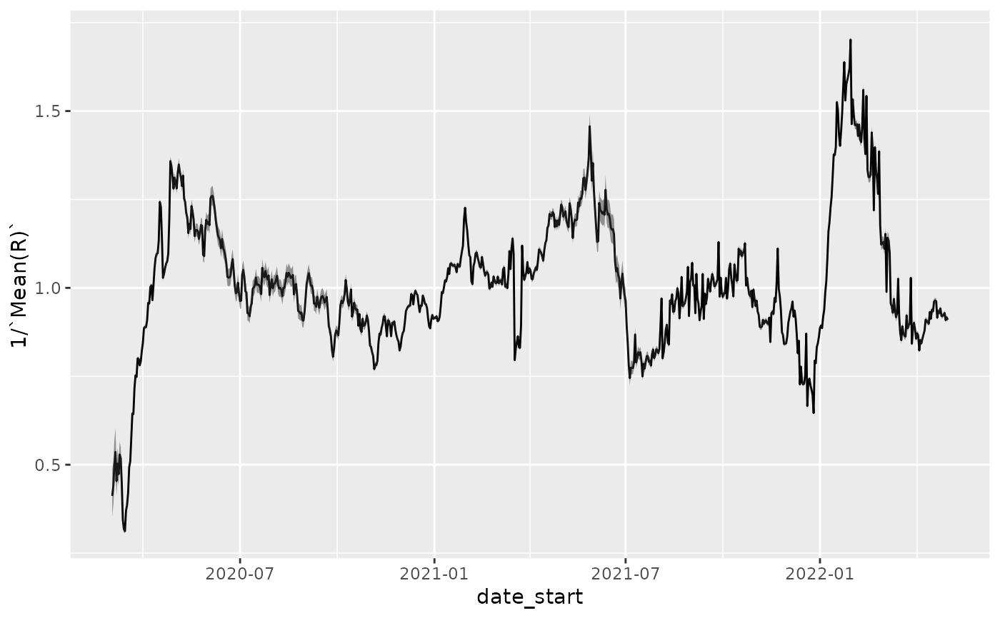
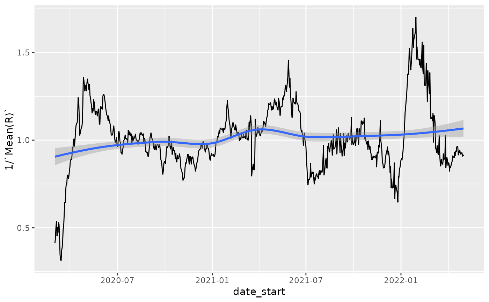

Given a case-tracking dataset, determine the basic reproduction index over time.
estimate_Rt(
df,
filter_expression,
cases_column = "count",
date_column = "date",
method,
config,
cumulative = TRUE,
estimation_family = "epiestim",
invert = FALSE,
quiet = TRUE,
...
)Arguments
- df
a data.frame containing at least a date column and a cases column, describing the cumulative cases at each date. Note that dates MUST NOT REPEAT and the function will check that this is the case. Use the
filter_expressionparameter to limit the data.frame to achieve non-duplicated dates from the typical case-tracking datasets in sars2pack.- filter_expression
a
dplyr::filterexpression, applied directly to the data.frame prior to calculating Rt. This is a useful way to write a one-liner from any of the case-tracking datasets.- cases_column
character(1) name of (cumulative) cases column in the input data.frame
- date_column
character(1) name of date column in the input data.frame
- method
character(1) passed to
EpiEstim::estimate_R()- config
list() passed to
EpiEstim::make_config(). Typically used to set up the serial interval distribution.- cumulative
logical(1) whether the case counts are cumulative (TRUE) or are daily incidence (FALSE)
- estimation_family
One of
epiestim- invert
Unused default FALSE, but if TRUE, returns 1/R(t) or related estimate, useful for plotting, since we are often most interested in looking at R(t) near or below 1.
- quiet
logical(1) whether or not to provide messages, etc.
- ...
passed to the estimation method
Value
For the epiestim method, returns a data.frame with columns: - Mean(R) - Std(R) - Quantile.0.025(R) - Quantile.0.05(R) - Quantile.0.25(R) - Median(R) - Quantile.0.75(R) - Quantile.0.95(R) - Quantile.0.975(R)" - date_start - date_end
See also
Other analysis:
bulk_estimate_Rt()
Other case-tracking:
align_to_baseline(),
beoutbreakprepared_data(),
bulk_estimate_Rt(),
combined_us_cases_data(),
coronadatascraper_data(),
covidtracker_data(),
ecdc_data(),
jhu_data(),
nytimes_county_data(),
owid_data(),
plot_epicurve(),
test_and_trace_data(),
usa_facts_data(),
who_cases()
Examples
nyt = nytimes_state_data()
head(nyt)
#> # A tibble: 6 × 5
#> date state fips count subset
#> <date> <chr> <chr> <dbl> <chr>
#> 1 2020-01-21 Washington 00053 1 confirmed
#> 2 2020-01-22 Washington 00053 1 confirmed
#> 3 2020-01-23 Washington 00053 1 confirmed
#> 4 2020-01-24 Illinois 00017 1 confirmed
#> 5 2020-01-24 Washington 00053 1 confirmed
#> 6 2020-01-25 California 00006 1 confirmed
nystate_Rt = estimate_Rt(
nyt,
filter_expression = state=='New York' & subset=='confirmed',
estimation_family='epiestim',
cumulative=TRUE,
method = 'parametric_si',
config = list(mean_si=3.96, std_si=4.75))
head(nystate_Rt)
#> t_start t_end Mean(R) Std(R) Quantile.0.025(R) Quantile.0.05(R)
#> 1 2 8 2.428545 0.2358812 1.988294 2.054010
#> 2 3 9 2.272241 0.1906823 1.913890 1.967954
#> 3 4 10 1.998458 0.1523810 1.710949 1.754590
#> 4 5 11 1.865457 0.1296582 1.619972 1.657433
#> 5 6 12 2.204895 0.1262519 1.964362 2.001419
#> 6 7 13 1.987600 0.1022311 1.792256 1.822487
#> Quantile.0.25(R) Median(R) Quantile.0.75(R) Quantile.0.95(R)
#> 1 2.265560 2.420913 2.583212 2.829117
#> 2 2.140887 2.266910 2.397784 2.594716
#> 3 1.893677 1.994586 2.099018 2.255532
#> 4 1.776444 1.862454 1.951197 2.083725
#> 5 2.118477 2.202486 2.288687 2.416589
#> 6 1.917724 1.985847 2.055565 2.158691
#> Quantile.0.975(R) date_start date_end
#> 1 2.912167 2020-03-02 2020-03-08
#> 2 2.660890 2020-03-03 2020-03-09
#> 3 2.307967 2020-03-04 2020-03-10
#> 4 2.128007 2020-03-05 2020-03-11
#> 5 2.459119 2020-03-06 2020-03-12
#> 6 2.192902 2020-03-07 2020-03-13
library(ggplot2)
p = ggplot(nystate_Rt, aes(x=date_start,y=`Mean(R)`)) + geom_line()
p
 p + geom_ribbon(aes(ymin=`Quantile.0.05(R)`, ymax=`Quantile.0.95(R)`), alpha=0.5)
p + geom_ribbon(aes(ymin=`Quantile.0.05(R)`, ymax=`Quantile.0.95(R)`), alpha=0.5)
 # plot 1/Rt to expand region around 1 since that is typically what
# is most interesting with respect to controls
p = ggplot(nystate_Rt, aes(x=date_start,y=1/`Mean(R)`)) + geom_line()
p

p + geom_ribbon(aes(ymax=1/`Quantile.0.05(R)`, ymin=1/`Quantile.0.95(R)`), alpha=0.5)

# and simple loess smoothing
p + geom_smooth()
#> `geom_smooth()` using method = 'loess' and formula 'y ~ x'

# super-cool use of tidyr, purrr, and dplyr to perform
# calculations over all states:
if (FALSE) {
library(dplyr)
library(tidyr)
est_by = function(df) {
estimate_Rt(
df,
estimation_family='epiestim',
cumulative=TRUE,
method = 'parametric_si',
config = list(mean_si=3.96, std_si=4.75))
}
z = nyt %>% dplyr::filter(subset=='confirmed') %>% tidyr::nest(-state) %>%
dplyr::mutate(rt_df = purrr::map(data, est_by)) %>% tidyr::unnest(cols=rt_df)
p = ggplot(z,aes(x=date_start,y=1/`Mean(R)`, color=state)) +
ylim(c(0.5,1.25)) +
geom_smooth(se = FALSE)
p
library(plotly)
ggplotly(p)
}
# plot 1/Rt to expand region around 1 since that is typically what
# is most interesting with respect to controls
p = ggplot(nystate_Rt, aes(x=date_start,y=1/`Mean(R)`)) + geom_line()
p

p + geom_ribbon(aes(ymax=1/`Quantile.0.05(R)`, ymin=1/`Quantile.0.95(R)`), alpha=0.5)

# and simple loess smoothing
p + geom_smooth()
#> `geom_smooth()` using method = 'loess' and formula 'y ~ x'

# super-cool use of tidyr, purrr, and dplyr to perform
# calculations over all states:
if (FALSE) {
library(dplyr)
library(tidyr)
est_by = function(df) {
estimate_Rt(
df,
estimation_family='epiestim',
cumulative=TRUE,
method = 'parametric_si',
config = list(mean_si=3.96, std_si=4.75))
}
z = nyt %>% dplyr::filter(subset=='confirmed') %>% tidyr::nest(-state) %>%
dplyr::mutate(rt_df = purrr::map(data, est_by)) %>% tidyr::unnest(cols=rt_df)
p = ggplot(z,aes(x=date_start,y=1/`Mean(R)`, color=state)) +
ylim(c(0.5,1.25)) +
geom_smooth(se = FALSE)
p
library(plotly)
ggplotly(p)
}